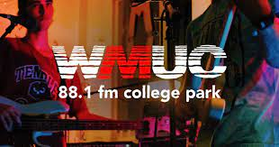

Content Producer

Delivery Driver
Camp Coordinator

University of Maryland
Class of 2022
Bachelor of Arts
Broadcast and Multiplatform Journalism
Concentration in Sociology
Honor Roll Student
3.76 GPA
Mahwah High School
Class of 2018
5 AP Courses (Statistics,AB Calculus, Literature, Language Compisition)
Relevant Coursework: Digital Media, Journalism, Broadcast Journalism
High Honor Roll Student
3.7 GPA
Proficient in Adobe and Microsoft
Have practice using:
Adobe Audition
Adobe Premiere
Adobe Photoshop
Microsoft Word
Microsoft Powerpoint
Microsoft Excel
Also a capable operator of many different social media platforms like Instagram, Twitter, and Snapchat.
Resourceful
Can make due with limited supplies in a restricted environment. Have an open-mind and can seek out out-of-the-box solutions with patience.
Also have in-the-field experience with recording and film equiptment where you have to think fast if there are technical issues.
Creative
Not afraid to experiment with different design elements and combinations across all mediums.
Also can implement ideas from different cultures and walks of life. Not pigeon-holed to specific schemes or plans of action.